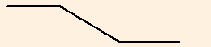

Strategies - Equity Options
Options are used both for hedging and for earning income. Strategies are combinations of options based on expectations of future movements of the underlying (spot), and volatilities. Risk, as for all capital markets instruments, always remains but the extent can be managed either through caps or through selling/buying back the option during the option’s life (to expiry).
Strategies can be used to build structured notes as in the costless collar.
In the following, for each of the strategies, the structure, the participant’s view and the maximum/minimum gains are listed. (fees which may or may not be required by the broker are not shown). Expiry dates are the same for all strategies. ATM = At-the-money, OTM=out-of-the-money.
| Strategy | Chart | Structure | Equity View | Volatility View | Max Loss | Max Gain |
|---|---|---|---|---|---|---|
| 1.Bull Call Spread | Buy a lower strike call and sell a higher strike call. | long | neutral | Net premium paid | higher strike less lower strike less net premium paid | |
| 2.Bull Put Spread | Buy a lower strike put and sell a higher strike put | long | neutral | Higher strike less lower strike plus net premium received | Net premium received | |
| 3.Bear Call Spread |  | Sell a lower strike call and buy a higher strike call | short | neutral | Higher strike less lower strike plus net premium received | Net premium received |
| 4.Bear Put Spread | Sell a lower strike put and buy a higher strike put | short | neutral | Net premium paid | higher strike less lower strike less net premium paid | |
| 5.Long Strangle | Buy an OTM call and Buy an OTM put | none | Long | Net premium paid | Unlimited | |
| 6.Short Strangle | Sell an OTM call and sell an OTM put | none | Short | Unlimited | Net premium received | |
| 7.Long Straddle | Buy a call and buy a put at same strikes | none | Long | Net premium paid | Unlimited | |
| 8.Short Straddle | Sell a call and sell a put at same strikes | none | short | Unlimited | Net premium received | |
| 9.Negative Risk Reversal | Sell OTM call and buy OTM put | short | Neutral | Unlimited | Put strike less net premium paid | |
| 10.Positive Risk Reversal | Buy OTM call and sell OTM Put | long | Neutral | Put strike less net premium received | Unlimited | |
| 11.Long Call Butterfly Spread | Buy one ITM call, sell 2 ATM Calls, buy one OTM Call; strikes equidistant | neutral | Short | Net premium paid | 1 ATM strike les OTM strike less net premium paid | |
| 12.Short Call Butterfly Spread | Sell one ITM call, buy 2 ATM Calls, sell one OTM Call; strikes equidistant | neutral | long | 1 ATM strike less OTM strike less net premium received | Net premium received | |
| 13.Long Put Butterfly Spread | Buy one OTM Put, sell 2 ATM Puts, buy one ITM Put; strikes equidistant | neutral | short | Net premium paid | ITM strike less 1 ATM strike less net premium paid | |
| 14.Short Put Butterfly Spread |  |
Sell one OTM put, buy 2 ATM Puts, sell one ITM Put; strikes equidistant | neutral | long | 1 ATM strike less ITM strike less net premium received | Net premium received |
| 15.Short Iron Condor | Buy one OTM Put, Sell one ATM put, Sell one OTM Call, Buy one OTM Call further above; strikes equidistant apart | neutral | short | Lower put strike less higher put strike, or, lower call strike less higher call strike; less net premium received | Net premium received | |
| 16.Long Iron Condor | Sell one OTM Put, Buy one ATM put, Buy one OTM Call, Sell one OTM Call further above; strikes equidistant apart | neutral | long | Net premium paid | Higher put strike less lower put strike, or, higher call strike less lower call strike; less net premium paid | |
| 17.Bullish Seagull | Buy a lower strike call and sell a higher strike call, Sell one OTM Put, zero premium | long | neutral | Put strike | Higher call strike less lower call strike | |
| 18.Bearish Seagull | Sell a lower strike put and buy a higher strike put, , Sell one OTM Call, zero premium | short | neutral | Unlimited | Higher put strike less lower put strike |